Исторические источники
- Повесть временных лет / подгот. текста, пер., ст. и коммент. Д. С. Лихачёва; под ред. В. П. Адриановой-Перетц. — 2-е изд., испр. и доп. — СПб.: Наука, 1996. — (Литературные памятники).Завещание Ярослава Мудрого, решение Любечского съезда, «Поучение» Мономаха
- Полное собрание русских летописей. Т. 1. Лаврентьевская летопись. — М.: Языки русской культуры, 1997.«Поучение» Владимира Мономаха, события в Северо-Восточной Руси
- Полное собрание русских летописей. Т. 2. Ипатьевская летопись. — М.: Языки русской культуры, 1998.Первое упоминание Москвы, взятие Киева в 1169 году, Галицко-Волынская летопись
- Новгородская первая летопись старшего и младшего изводов / под ред. А. Н. Насонова. — М.; Л.: Изд-во АН СССР, 1950.Изгнание князя Всеволода в 1136 году
- Грамоты Великого Новгорода и Пскова / под ред. С. Н. Валка. — М.; Л.: Изд-во АН СССР, 1949.Договор Новгорода с князем Ярославом Ярославичем
- Слово о полку Игореве / под ред. В. П. Адриановой-Перетц. — М.; Л.: Изд-во АН СССР, 1950. — (Литературные памятники).Текст и перевод Д. С. Лихачёва
- Библиотека литературы Древней Руси. Т. 4: XII век; Т. 5: XIII век / под ред. Д. С. Лихачёва и др. — СПб.: Наука, 1997.«Повесть о разорении Рязани Батыем», Галицко-Волынская летопись
Научная и учебная литература
- Арсентьев Н. М., Данилов А. А., Стефанович П. С., Токарева А. Я. История России. 6 класс: учебник для общеобразоват. организаций: в 2 ч. / под ред. А. В. Торкунова. — М.: Просвещение, 2016.Основа структуры разделов, определения и хронология
- Рыбаков Б. А. Киевская Русь и русские княжества XII–XIII вв. — М.: Наука, 1982.Причины и характер раздробленности, культура княжеств
- Ключевский В. О. Курс русской истории. Ч. 1 // Ключевский В. О. Сочинения: в 9 т. Т. 1. — М.: Мысль, 1987.Удельный порядок, взгляд на эпоху
- Соловьёв С. М. История России с древнейших времён. Кн. 1 (т. 1–2). — М.: Мысль, 1988.Родовая теория, события XI–XII веков
- Горский А. А. Русские земли в XIII–XIV веках: пути политического развития. — М.: ИРИ РАН, 1996.Политическое развитие земель после нашествия
- Данилевский И. Н. Древняя Русь глазами современников и потомков (IX–XII вв.): курс лекций. — М.: Аспект Пресс, 1998.Как читать летописи; Любечский съезд
- Янин В. Л. Я послал тебе бересту… — 3-е изд., перераб. и доп. — М.: Языки русской культуры, 1998.Берестяные грамоты и устройство Новгорода
- Фроянов И. Я. Мятежный Новгород: очерки истории государственности, социальной и политической борьбы конца IX — начала XIII столетия. — СПб.: Изд-во СПбГУ, 1992.Новгородское вече и князья
- Пашуто В. Т. Очерки по истории Галицко-Волынской Руси. — М.: Изд-во АН СССР, 1950.Галицко-Волынское княжество, Даниил Галицкий
- Воронин Н. Н. Зодчество Северо-Восточной Руси XII–XV веков: в 2 т. — М.: Изд-во АН СССР, 1961–1962.Белокаменное зодчество Владимира
- Пчелов Е. В. Рюриковичи: история династии. — М.: ОЛМА-Пресс, 2001.Родословие князей
Электронные ресурсы
- Библиотека литературы Древней Русиlib.pushkinskijdom.ruЭлектронные публикации Института русской литературы (Пушкинский Дом) РАН: тексты и переводы летописей и древнерусских повестей.
- Полное собрание русских летописейpsrl.csu.ruЭлектронная версия томов ПСРЛ.
- Древнерусские берестяные грамотыgramoty.ruТексты, фотографии и переводы всех найденных берестяных грамот.
- Большая российская энциклопедияbigenc.ruСтатьи «Удельная Русь», «Любечский съезд», «Новгородская республика», биографии князей.
- Российская электронная школаresh.edu.ruВидеоуроки по истории России для 6 класса: «Политическая раздробленность на Руси».
- Восточная литератураvostlit.infoБиблиотека средневековых исторических источников в переводах.
- Государственная Третьяковская галереяtretyakovgallery.ruКартины В. М. Васнецова и древнерусская иконопись.
- Wikimedia Commonscommons.wikimedia.orgИсточник всех иллюстраций сайта — полный список ниже.
Иллюстрации
Все изображения взяты с Wikimedia Commons. Произведения, созданные до начала XX века, находятся в общественном достоянии; современные фотографии используются по свободным лицензиям Creative Commons с указанием автора.
| Миниатюра | Изображение | Автор | Лицензия | Файл |
|---|---|---|---|---|
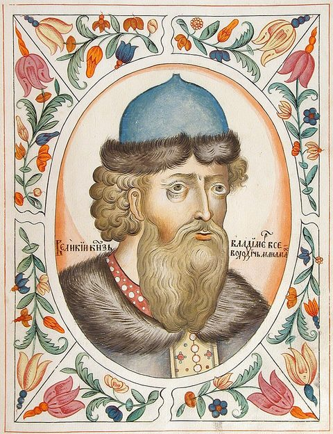 | Владимир Мономах. «Царский титулярник», 1672 | мастера Посольского приказа | общественное достояние | Commons |
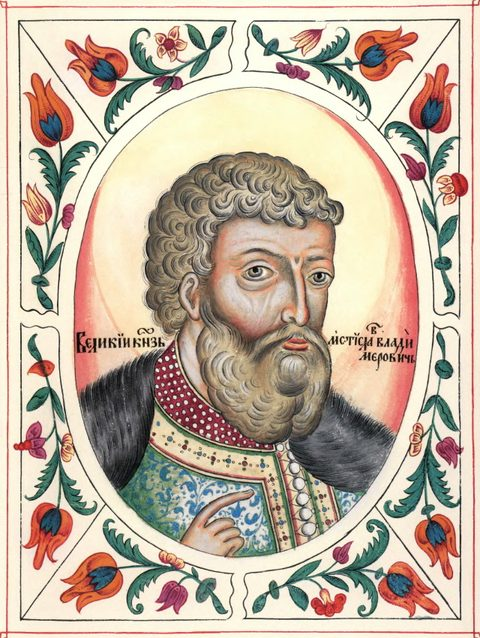 | Мстислав Великий. «Царский титулярник», 1672 | мастера Посольского приказа | общественное достояние | Commons |
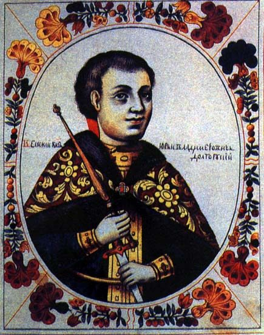 | Юрий Долгорукий. Миниатюра титулярника, XVII век | неизвестный автор, XVII в. | CC SA 1.0 | Commons |
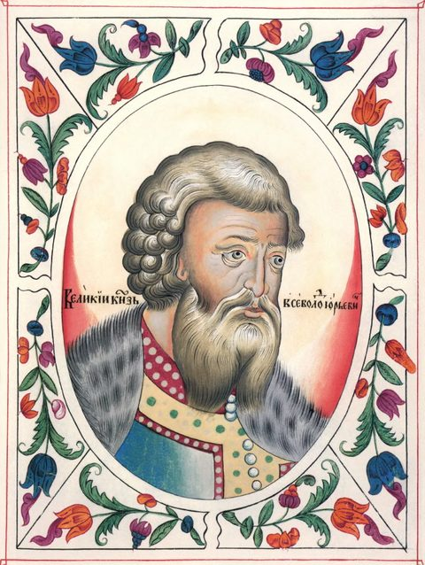 | Всеволод Большое Гнездо. «Царский титулярник», 1672 | мастера Посольского приказа | общественное достояние | Commons |
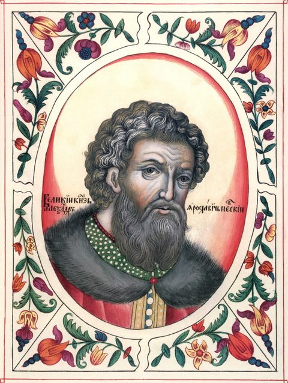 | Александр Невский. «Царский титулярник», 1672 | мастера Посольского приказа | общественное достояние | Commons |
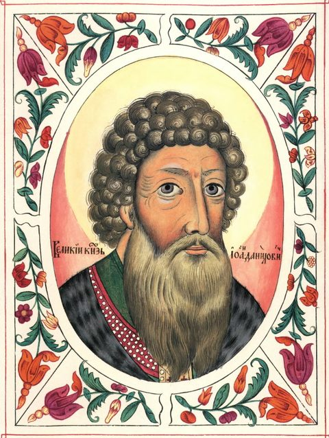 | Иван Калита. «Царский титулярник», 1672 | мастера Посольского приказа | общественное достояние | Commons |
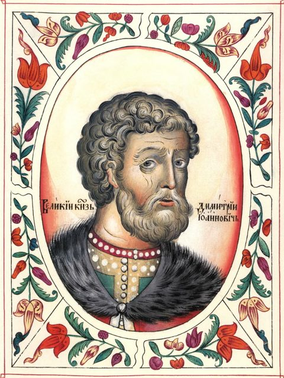 | Дмитрий Донской. «Царский титулярник», 1672 | мастера Посольского приказа | общественное достояние | Commons |
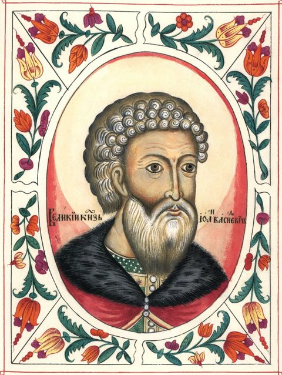 | Иван III. «Царский титулярник», 1672 | мастера Посольского приказа | общественное достояние | Commons |
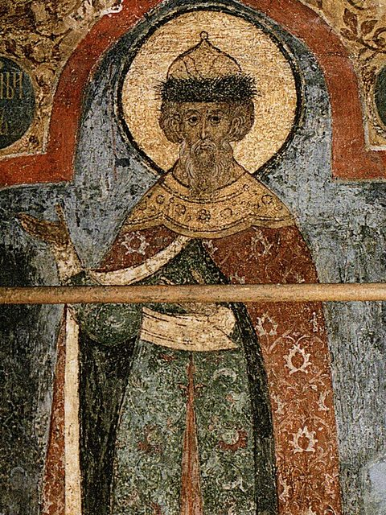 | Андрей Боголюбский. Фреска Архангельского собора Московского Кремля (фрагмент) | неизвестные мастера, XVII в. | CC BY-SA 4.0 | Commons |
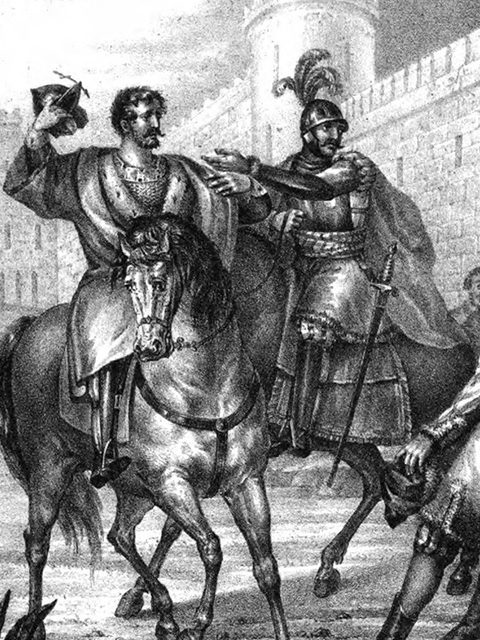 | Князь Даниил Галицкий и ляхи. Литография по рис. Б. А. Чорикова (фрагмент) | Б. А. Чориков (рисунок) | CC BY-SA 4.0 | Commons |
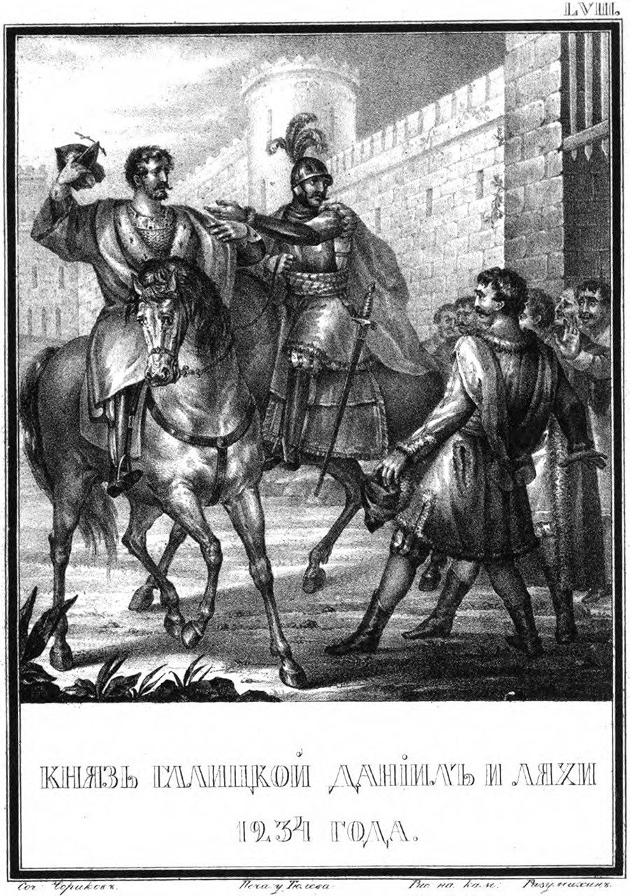 | Князь Даниил Галицкий и ляхи. Литография по рис. Б. А. Чорикова, 1836 | Б. А. Чориков (рисунок) | CC BY-SA 4.0 | Commons |
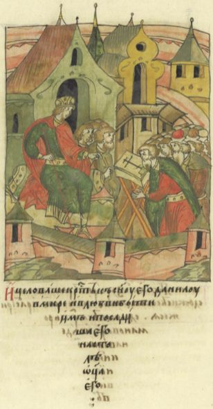 | Бояре присягают Даниилу Галицкому. Миниатюра Лицевого летописного свода | неизвестные миниатюристы Лицевого летописного свода, 1560–1570-е гг. | общественное достояние | Commons |
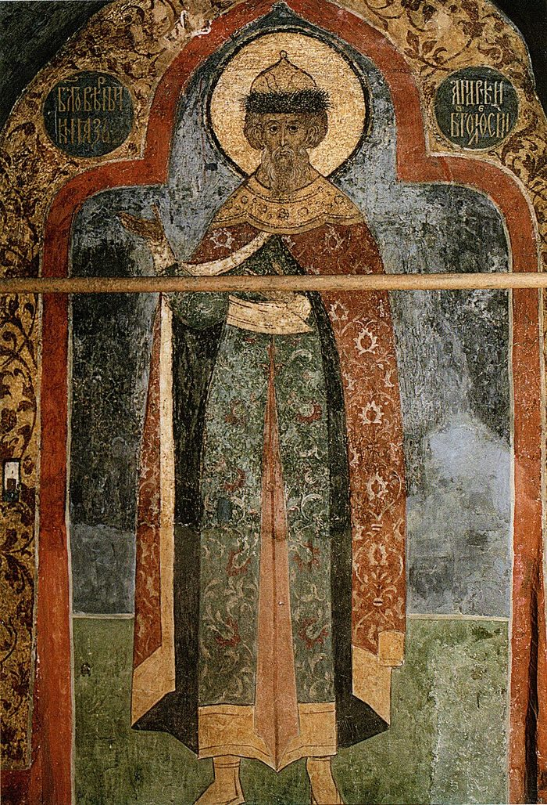 | Андрей Боголюбский. Фреска Архангельского собора Московского Кремля | неизвестные мастера, XVII в. | CC BY-SA 4.0 | Commons |
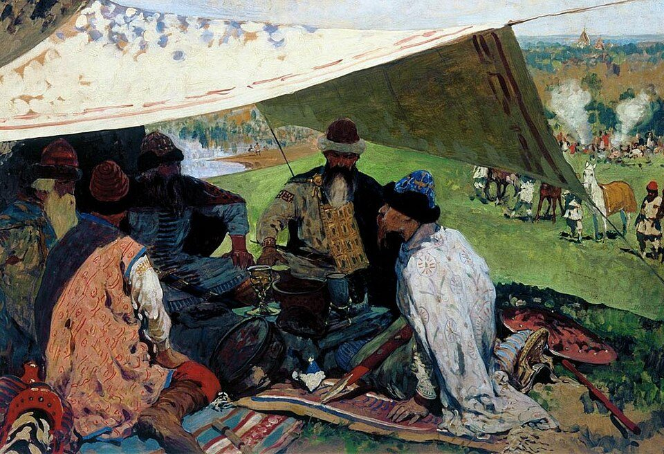 | С. В. Иванов. Съезд князей в Уветичах, 1905 | С. В. Иванов | общественное достояние | Commons |
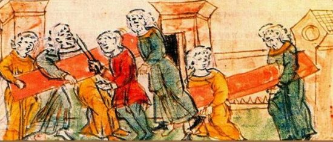 | Ослепление Василька. Миниатюра Радзивилловской летописи | неизвестный миниатюрист, конец XV в. | общественное достояние | Commons |
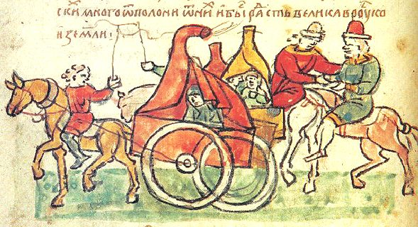 | Половецкие вежи. Миниатюра Радзивилловской летописи | неизвестный миниатюрист, конец XV в. | общественное достояние | Commons |
 | В. М. Васнецов. После побоища Игоря Святославича с половцами, 1880 | В. М. Васнецов | общественное достояние | Commons |
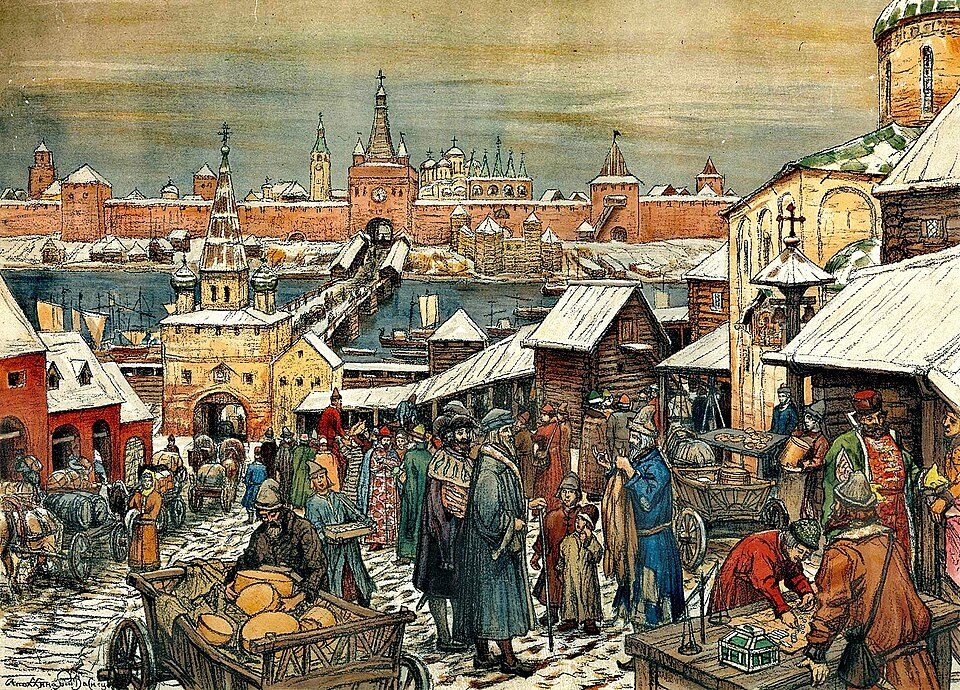 | А. М. Васнецов. Новгородский торг, 1909 | А. М. Васнецов | общественное достояние | Commons |
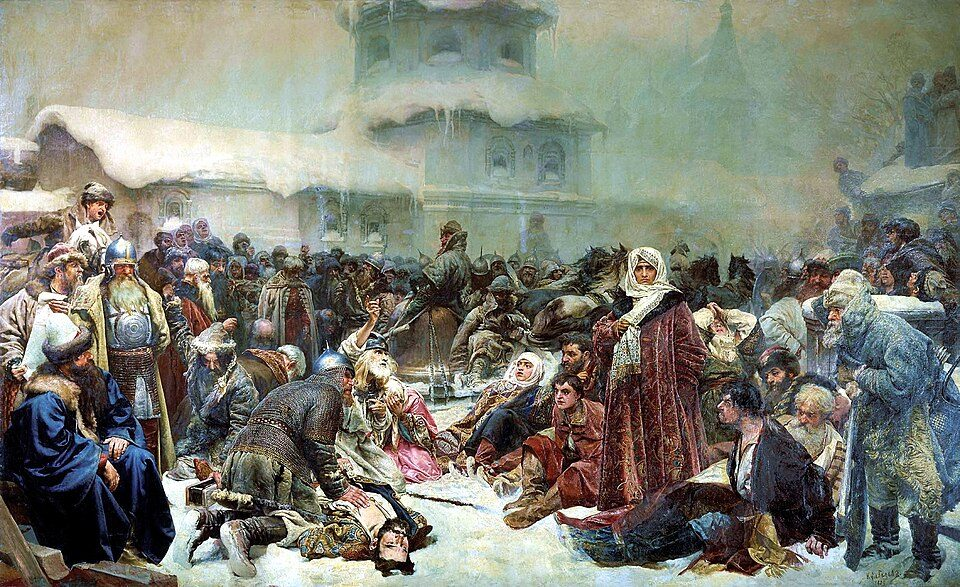 | К. В. Лебедев. Марфа Посадница. Уничтожение новгородского веча, 1889 | К. В. Лебедев | общественное достояние | Commons |
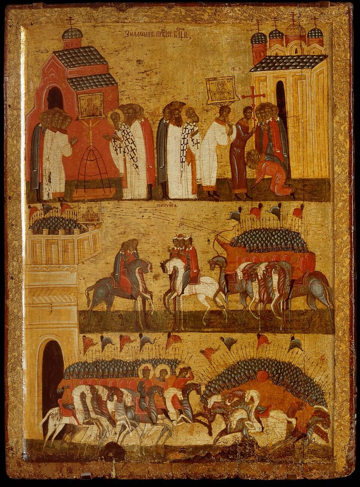 | Икона «Битва новгородцев с суздальцами», XV век | неизвестный новгородский иконописец | общественное достояние | Commons |
 | Битва на Калке. Миниатюра Лицевого летописного свода, XVI век | неизвестные миниатюристы Лицевого летописного свода, 1560–1570-е гг. | общественное достояние | Commons |
 | Разорение Рязани. Миниатюра Лицевого летописного свода, XVI век | неизвестные миниатюристы Лицевого летописного свода, 1560–1570-е гг. | общественное достояние | Commons |
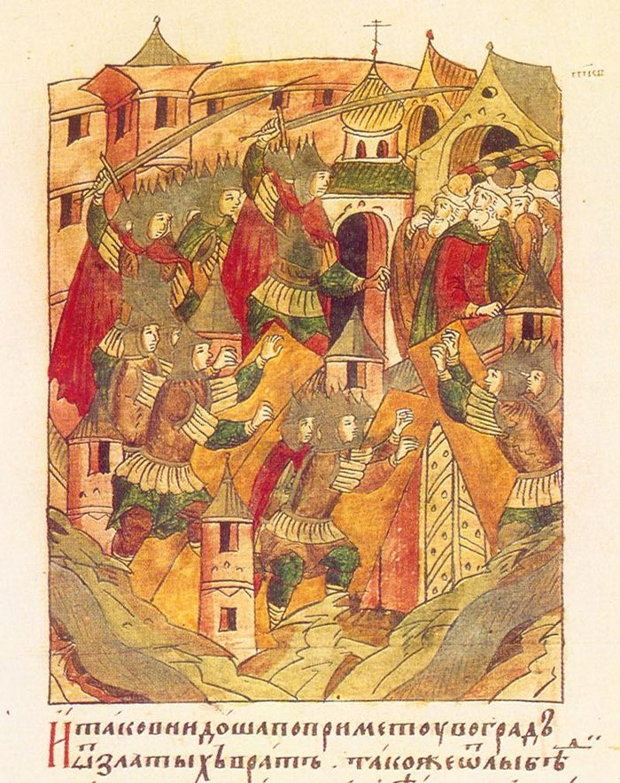 | Взятие Владимира. Миниатюра Лицевого летописного свода, XVI век | неизвестные миниатюристы Лицевого летописного свода, 1560–1570-е гг. | общественное достояние | Commons |
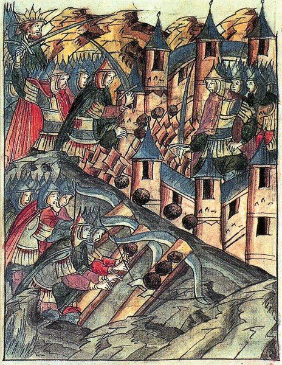 | Оборона Козельска. Миниатюра Лицевого летописного свода, XVI век | неизвестные миниатюристы Лицевого летописного свода, 1560–1570-е гг. | общественное достояние | Commons |
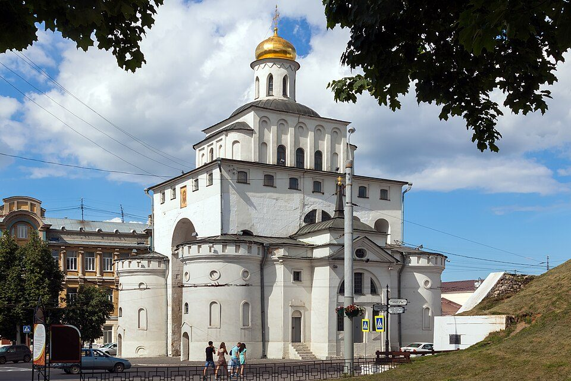 | Золотые ворота во Владимире (фото) | фото: Mike1979 Russia | CC BY-SA 4.0 | Commons |
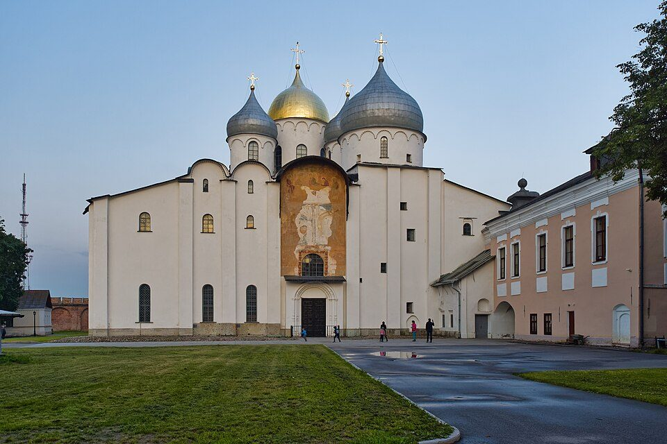 | Софийский собор в Великом Новгороде (фото) | фото: Alexxx1979 | CC BY-SA 4.0 | Commons |
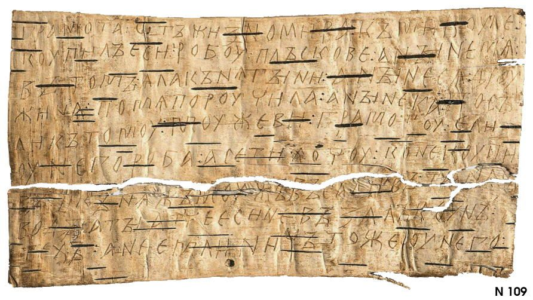 | Берестяная грамота № 109 | фото: неизвестный автор | CC BY 1.0 | Commons |
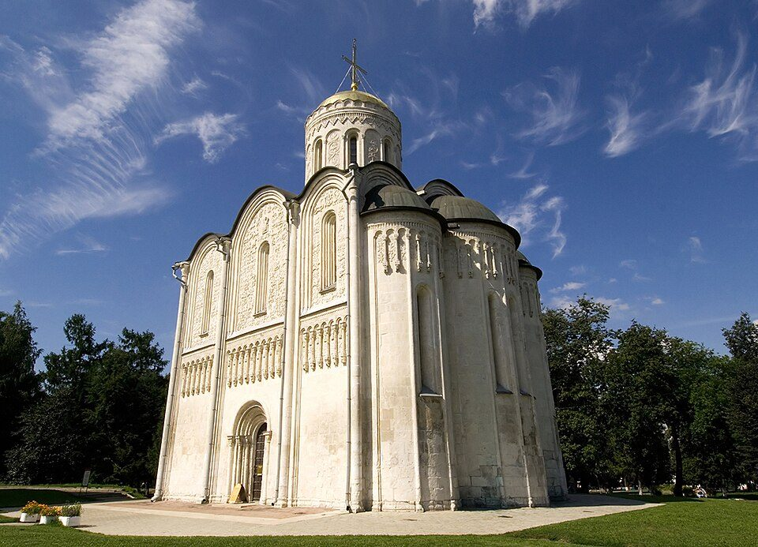 | Дмитриевский собор во Владимире (фото) | фото: Aleksandr Markin | CC BY-SA 2.0 | Commons |
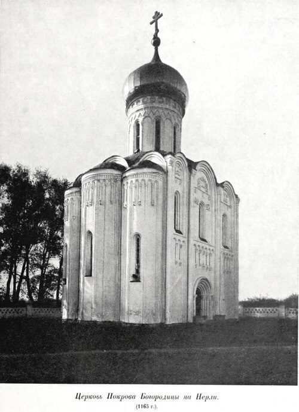 | Церковь Покрова на Нерли. Фото из «Истории русского искусства» И. Э. Грабаря | фото начала XX в. (издание И. Э. Грабаря) | общественное достояние | Commons |
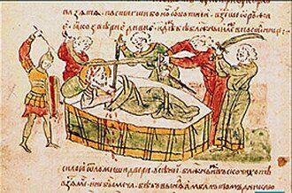 | Убийство Андрея Боголюбского. Миниатюра Радзивилловской летописи | неизвестный миниатюрист, конец XV в. | общественное достояние | Commons |
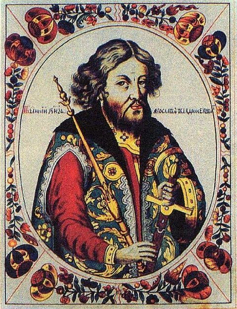 | Ярослав Мудрый. «Царский титулярник», 1672 | мастера Посольского приказа | общественное достояние | Commons |
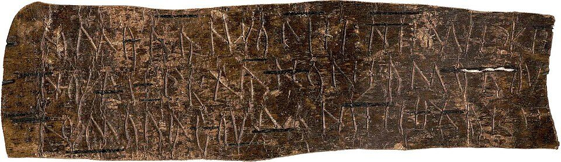 | Берестяная грамота № 292 | фото: неизвестный автор | общественное достояние | Commons |
Карта, шрифты и оформление
- Карта княжеств на страницах «Главная», «Княжества» и в тесте перерисована на основе карты «Kievan Rus in 1237 (ru)» (автор Hellerick, лицензия CC BY-SA 3.0): границы упрощены, изменены цвета и подписи. Переработанная карта распространяется на тех же условиях.
- Шрифты: Ponomar — для заголовков (устав, как в летописях), Literata — для основного текста, Onest — для интерфейса. Все три распространяются по лицензии SIL Open Font License через Google Fonts.
- Цвета сайта подобраны по пигментам древнерусской живописи: киноварь, голубец, охра, ярь-медянка, левкас.
- Схемы (причины раздробленности, лествичное право, устройство власти, родословие князей) составлены автором проекта по материалам перечисленной литературы.